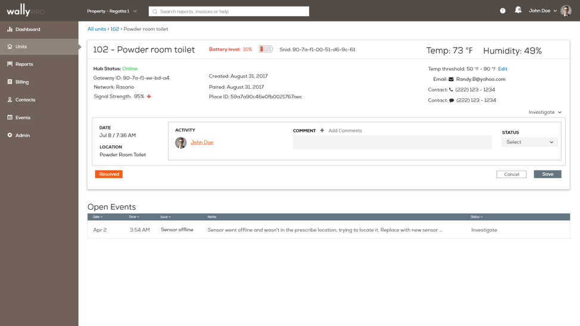
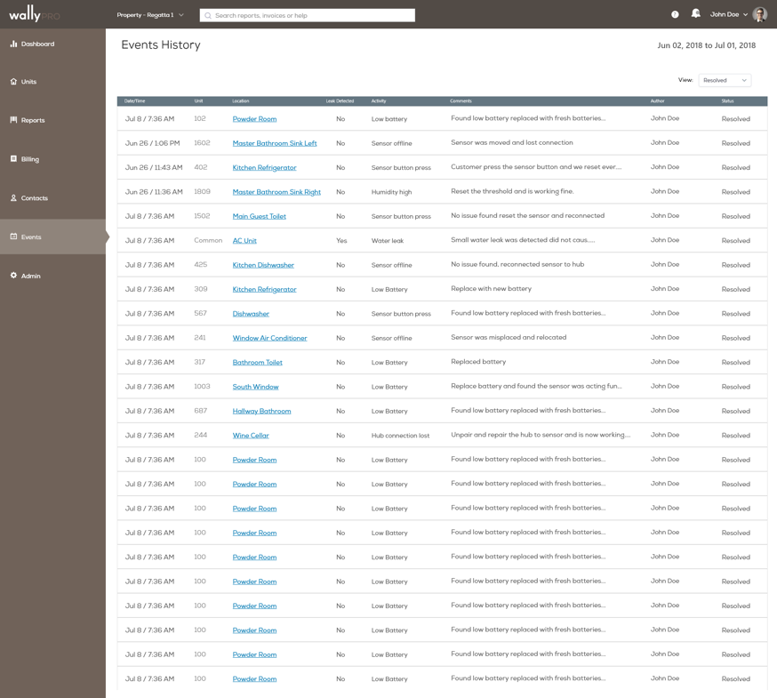

The Dashboard page was modified to provide an overview of multiple events simultaneously. The status of resolution helped expedite the decision making process by the building staff. By clicking on the alerts page the user would be directed straight to the sensor page where alerts get resolved.
The Units page provided the analytics of the recent events in the system. The buildings which were in the process of onboarding Wally Pro had requested a way to track the progress of installation of these devices in individual units. We used radial gauge to present the installation progress. The management was also able to see the amount of money they had saved through the timely detection of various events. It also provided an overview of all the sensors in the unit and their status.
The new redesign also provided the user the affordance to control account activation for individual units unlike the previous iteration.
The sensor page was updated to be able to provide more actionable insights. The new redesign made it possible to assign status of the resolution. The notes section of the previous design was renamed to comments to capture a detailed explanation of what actions were taken. It also automatically included a timestamp of when this update was made. The user now had the capability to capture event resolution from the dashboard.

The events page was synonymous with the recent events page. It captured all the events that had occured within a given time frame. The user could use various filters to narrow down their search.
